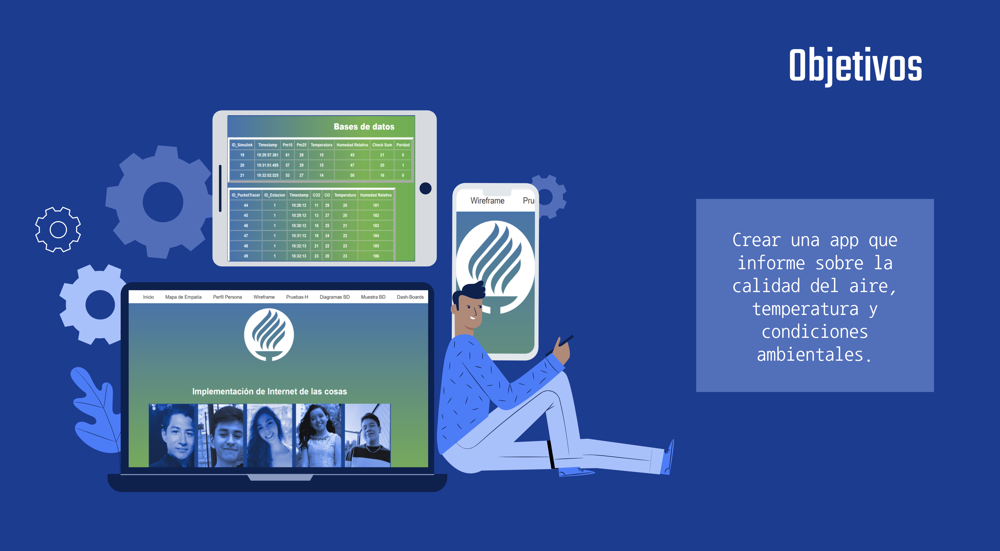
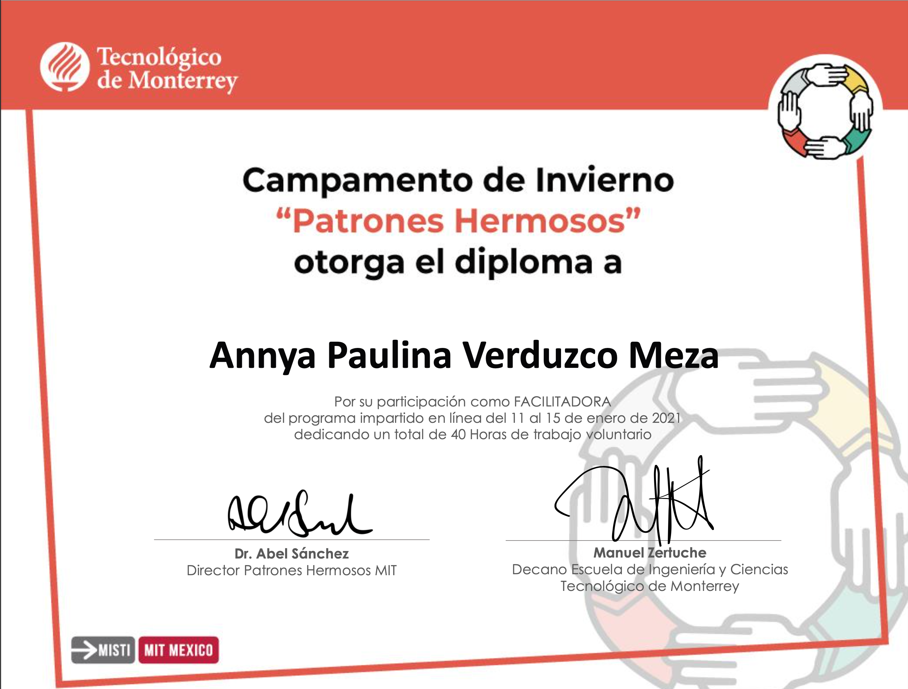
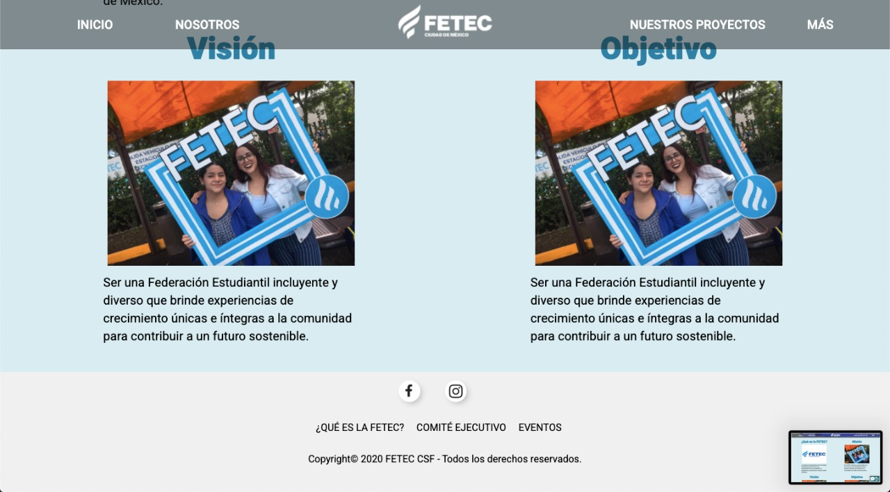

IoT Climate Website
- IoT Website/Database/Simulator- June 2020
This project's goal was to design a website that showed different measurements regarding weather
conditions in Mexico City, such as temperature, humidity and Co2. The purpuse of this website
was to take note of how bad our weather conditions actually are. For this project my team and I worked with matlab, as well as packet tracker and php myadmin for the data base.

Beautiful Patterns/Patrones Hermosos
- Beautiful Patterns - January 2021
At the biginning of this year I had the amazing oportunity to be part of an amazing iniciative called "Beautiful Patterns", this is a wonderful project meant to inspire, motivate and empower women to study STEAM related careers. During one week I worked closely with young girls, teaching them python basic concepts and algorithmic thinking.

FETEC
- Website- January 2021
FETEC is the student's association in ITESM, meaning, they're in charge of solving students concerns and making events; as important as they are they didn't have an official website where someone could access thier events and keep track of what they are currently doing. This is why me and my friends decided to make one.
The website allows you to get in contact with FETEC members as well as checking their calender.
